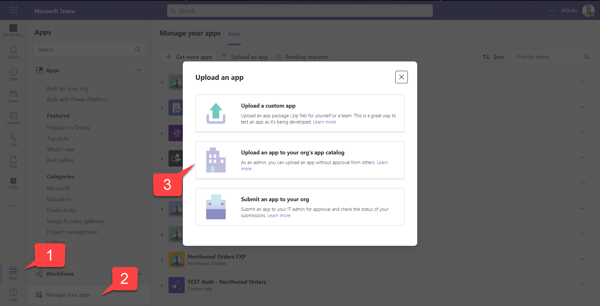

Add a Meeting app

Add a Configurable Tab to Meetings
This lab is part of extending with capabilities for your teams app which begins with a Northwind Orders core application using the AAD path.
Important!
This lab builds on the completed solution to the Configurable Tab lab. Complete labs A01-A03 to get to the Northwind Orders core application and then complete the Configurable Tab Lab to add a configurable tab to your application before beginning this lab.
Following on from the previous lab where you created a Configurable Tab which could be configured to display a list products with a given category, in this lab you will extend the tab so that it can also be used in Microsoft Teams meetings.
Extending tabs for use in Microsoft Teams meetings provides the meeting owner the ability to add the tab, which can be accessed by meeting participants before, during, and after the meeting. It also allows sharing the contents of the tab to the meeting content stage without the participants having to switch to another window during the meeting as the content is displayed directly in the meeting window.
In this lab you will learn to:
- Configure your Configurable Tab for use with Microsoft Teams meetings
- Add your tab to the Microsoft Teams Meeting Pre-meeting stage
- Add your tab to the Microsoft Teams Meeting Side Panel during a meeting
- Present your tab in the Microsoft Teams Meeting Content Stage during a meeting
- Use the Teams JS SDK to understand the current Microsoft Teams Frame Context
- Use the Teams JS SDK to understand whether the tab is being shared to the Microsoft Teams Meeting Content Stage
Video briefing

Features
- Microsoft Teams configurable tab to display a product category in during pre-meeting stage
- Microsoft Teams configurable tab to display a product category in the Meeting Side Panel during a Teams meeting
- Microsoft Teams configurable tab to display a product category and be shared to the Meeting Content Stage
Exercise 1: Update your configurable tab for use with Meetings
Step 1: Add context array to application manifest
In your code editor, open the manifest/manifest.template.json file.
Update the version number so it's greater than it was; for example if your manifest was version 1.4, make it 1.4.1 or 1.5.0. This is required in order for you to update the app in Teams.
"version": "1.5.0"
NOTE: Make each new version greater than the last so you can update the application in Teams!
Now, immediately under the scopes array, in the your configurable tab object, add a new array for defining the context:
"configurableTabs": [
{
"configurationUrl": "https://<HOST_NAME>/pages/tabConfig.html",
"canUpdateConfiguration": true,
"scopes": [
"team",
"groupchat"
],
"context": [
"meetingChatTab",
"meetingDetailsTab",
"meetingSidePanel",
"meetingStage"
]
}
]
Step 2: Rebuild your application package
Open a command line tool in your working folder and execute
npm run package
This will generate a new manifest.json file and a new application package (northwind.zip).
Step 3: Start your app
In your working directory execute this command to start the application
npm start
Step 4: Upload the app package
In the Teams web or desktop UI, click "Apps" in the sidebar 1️⃣, then "Manage your apps" 2️⃣. At this point you have three choices:
- Upload a custom app (upload the app for yourself or a specific team or group chat) - this only appears if you have enabled "Upload custom apps" in your setup policy; this was a step in the previous lab
- Upload an app to your org's app catalog (upload the app for use within your organization) - this only appears if you are a tenant administrator
- Submit an app to your org (initiate a workflow asking a tenant administrator to install your app) - this appears for everyone
In this case, choose the second option 3️⃣.

Navigate to the Northwind.zip file in your manifest directory and upload it.
Although the application is already installed, you are providing a newer version so it will update the application.
Exercise 2: Add your tab to the pre-meeting stage
Step 1: Create Microsoft Teams meeting
Using the Microsoft Teams desktop client, open the Calendar app from the sidebar and select New meetingin the top right corner.
Enter a title and add at least one required participant, select Send in the top right corner to create the meeting.
Step 2: Add tab
Select the meeting that you just created in the Calendar app, in the flyout, select Edit to open the meeting details.
Select the (+) Add tab button in the meeting, search for Northwind Orders app and select it. In the tab configuration page, select a Category of products you want to display in the tab.
The tab is added at the pre-meeting stage, so that meeting participants can view the tab content before the meeting begins, this also pre-loads the tab in to the meeting when it begins.
Click Close in the top right corner to go back to the Calendar view.
Excercise 3: Display tab in Meeting
Step 1: Start meeting
Select the meeting that you just created in the Calendar app, in the flyout, select Join to open the meeting and select Join now to start the meeting.
Step 2: Display tab in Meeting Side Panel
When a tab has already been added to the meeting at the pre-meeting stage, the tab will be visible in the meeting controls shown at the top of the meeting.
To display the tab in the Meeting Side Panel, select the tab icon, this will open the Meeting Side Panel displaying the tab content within it.
At the moment the table is too big for the width of the side panel, but don't worry, we will come back to this and fix it in later exercise.
Step 3: Present tab in Meeting Content Stage
To make the tab content visible to all partipicants in the meeting, you can present the tab by sharing it to the Meeting Content Stage.
Select the Share icon in the Meeting Side Panel to present the tab to the stage.
Exercise 4: Update tab display when in Meeting Side Panel
In the previous exercise we saw that when the tab was displayed in the Meeting Side Panel, the products table width was too wide for the space given to us by the Side Panel, to do this we need to use the Teams JS SDK v2 to help us understand the context in which our tab is running and whether it has been shared to the stage.
Step 1: Add code to detect Frame Context
We can use the Teams JS SDK FrameContexts capability to obtain the current FrameContext type from the page context and check whether the app is running in the sidePanel frame.
In client/modules/teamsHelpers.js, add the following function.
// async function returns true if app is running in side panel in a Teams meeting
export async function inSidePanel() {
try {
await ensureTeamsSdkInitialized();
const { page } = await microsoftTeams.app.getContext();
return page.frameContext === microsoftTeams.FrameContexts.sidePanel;
} catch (e) {
console.log(`${e} from Teams SDK, may be running outside of Teams`);
return false;
}
}
Step 2: Add code to detect whether tab is shared to stage
We can use the Teams JS SDK meeting capability to obtain the current state of the meeting stage.
In client/modules/teamsHelpers.js, add the following function.
// async function returns true if app has been shared to stage in a Teams meeting
export async function sharedToStage() {
try {
await ensureTeamsSdkInitialized();
const { isAppSharing } = await microsoftTeams.meeting.getAppContentStageSharingState();
return isAppSharing;
} catch (e) {
console.log(`${e} from Teams SDK, may be running outside of Teams`);
return false;
}
}
Step 3: Add code to hide table columns when tab is displayed in Meeting Side Panel
We can use the two helper functions that we just added to hide some of the table columns when the tab is shown in the side panel, but to not remove them when the same tab is presented to the stage so we can make utilise the full width of the meeting content stage.
In client/pages/categoryDetail.js, add the following import statement to the top of the file.
import {
inSidePanel,
sharedToStage
} from '../modules/teamsHelpers.js';
Add the following code into the displayUI function around line 40.
if (await inSidePanel() && !(await sharedToStage())) {
const table = document.getElementById('products');
table.querySelectorAll('th:nth-child(n+4)').forEach((e) => { e.style.display = 'none'; });
table.querySelectorAll('td:nth-child(n+4)').forEach((e) => { e.style.display = 'none'; });
}
The if statement that creates the products table if a category is selected, should look like
if (category) {
displayElement.innerHTML = `
<img src="data:image/bmp;base64,${category.picture}" class="categoryImage"></img>
<h3>${category.displayName}</h3>
<p>${category.description}</p>
`;
category.products.forEach(product => {
const row = document.createElement('tr');
row.innerHTML = `<tr>
<td><a href="/pages/productDetail.html?productId=${product.productId}">${product.productName}</a></td>
<td>${product.quantityPerUnit}</td>
<td>${product.unitPrice}</td>
<td>${product.unitsInStock}</td>
<td>${product.unitsOnOrder}</td>
<td>${product.supplierName} (${product.supplierCountry})</td>
</tr>`;
productsElement.append(row);
});
if (await inSidePanel() && !(await sharedToStage())) {
const table = document.getElementById('products');
table.querySelectorAll('th:nth-child(n+4)').forEach((e) => { e.style.display = 'none'; });
table.querySelectorAll('td:nth-child(n+4)').forEach((e) => { e.style.display = 'none'; });
}
}
Step 4: Test your changes
After you have made the changes, you will need to close and re-open the app in the Meeting, you can do so by selecting the Tab icon in the meeting controls shown at the top of the meeting to close the Meeting Side Panel and again to re-open it.
When you re-open the tab in the Meeting Side Panel, only three table columns will now be visible.
Congratulations!
No personal information is collected; we only want to count how many people have completed the labs so we can continue to fund this work!
Known issues
For the latest issues, or to file a bug report, see the github issues list for this repository.
References
- Apps for Teams meetings
- Create a configuration page
- Enable and configure your apps for Teams meetings
- Meeting apps API references
Next steps
After completing this lab, you may continue with any of the following labs.
- Add a Configurable Tab
- Add a Deep link to a personal Tab
- Add a Dialog
- Add a Meeting app
- Add a Message Extension
- Selling Your SaaS-based Teams Extension
- Extend your Teams app to Outlook and Microsoft365 app